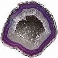

O plano de tratamento e diagnóstico do seu dentista
...honesto e duplicável ou influenciado por interesses financeiros?
Continuando a partir da primeira página de CuraDente sobre o assunto da "honestidade na odontologia" ("Dez dentistas – dez diagnósticos: Sobre os Diagnósticos Equivocados ou a qualidade e reprodutibilidade das decisões dos dentistas sobre tratamento"), essa página detalha muitos dos resultados obtidos pelo pesquisador norte-americano William Ecenbarger, que conduziu um estudo sobre a qualidade e honestidade de dentistas americanos e chegou à conclusão de que a odontologia como uma ciência é "incrivelmente imprecisa". Embora os resultados pudessem ser atribuídos à mera falta de habilidade para o diagnóstico, ao prover "prova circunstancial", Ecenbarger mostra que os planos e custos de tratamento amplamente divergentes muito provavelmente se devem a uma simples causa: interesses financeiros.
Preâmbulo: algumas palavras sobre a honestidade de dentistas
Há aqueles que argumentam que nenhum dentista é honesto quando não informa a você sobre o fato de que os dentes são basicamente auto-curáveis, que as cáries (deterioração dental) é curável (sempre no início e às vezes nos estágios avançados – e também o é a doença gengival, veja as seções de CuraDente sobre Auto-cura dental e Remédios caseiros e holísticos) e os meios de conseguir isso por você próprio. Esses meios incluem primeiramente dieta, então compostos como a vitamina D, ervas e principalmente o xilitol. O seu dentista lhe informou sobre essas maneiras de se ajudar com vantagem e baixo custo e conservar seus dentes e gengivas tão saudáveis como possível?
Além disso, nenhum dentista que omita a você os riscos potenciais envolvidos nos vários procedimentos dentários e substâncias usadas (que incluem perda de dente, doença grave, sofrimento e até a morte), pode ser considerado honesto (leia a vasta cobertura de CD sobre esses assuntos em sua seção Convencional). O seu dentista lhe informou sobre essas coisas?
Honestidade dos dentistas: um importante esforço investigativo de um homem, realizado nos EUA
Como foi publicado no Reader's Digest em 1997, o repórter William Ecenbarger visitou 50 dentistas diferentes (que ele escolheu aleatoriamente nas Páginas Amarelas) durante um período de quatro meses, para investigar a confiança e honestidade de diagnósticos dentários, perguntando a cada um desses dentistas que tipo de trabalho era necessário fazer em seus dentes, com base nos seus raios-X.
Antes de iniciar as visitas aos dentistas espalhados em 28 estados americanos e o Distrito de Colúmbia, Ecenbarger solicitou uma avaliação de sua saúde oral a vários dentistas que não tinham interesse financeiro em seus dentes. A opinião deles serviria como base para comparar os outros diagnósticos que ele receberia. Dentre os peritos consultados estavam o Dr. John Dodes (perito dental para o National Council Against Health Fraud [Conselho Nacional Contra Fraude em Saúde]) e o Dr. Alvin Morris (ex-decano da Faculdade de Odontologia da Universidade de Kentucky). Além disso, Ecenbarger consultou o seu confiável dentista pessoal.
Todos esses homens profissionais concordaram que a saúde dental de Ecenbarger era boa, à exceção de um dos seus dentes molares (dente no. 30) que afirmaram necessitava de uma coroa ou obturação e possivelmente uma intervenção era necessária no dente No. 18, com os custos de tratamento dentário não ultrapassando os $1500, no caso de que duas coroas fossem indicadas. O júri também afirmou que um exame apropriado para novos pacientes deveria incluir um teste bucal sobre câncer, um exame periodontal e uma consulta com o periodontista que realizou a cirurgia gengival no paciente.
Para receber um plano de tratamento por escrito e o orçamento correspondente de cada um dos dentistas que ele estava consultando, Ecenbarger disse-lhes que participava de um programa de reembolso direto (em que o seu empregador cobria os custos de qualquer trabalho dentário que ele fizesse, significando que o dentista seria pago rapidamente e que nenhum terceiro elemento, como uma companhia de seguros, investigaria o trabalho do dentista). Ecenbarger também lhes informou que havia tido uma cirurgia gengival de sucesso, que estava feliz com a aparência de seus dentes e vivamente interessado em manter a saúde futura de seus dentes e gengivas.
Resultados das 50 consultas-teste: diagnósticos
Dos 50 profissionais cuja opinião foi consultada sobre a condição dos dentes do paciente em potencial,
- 1 dentista disse que cinco dentes necessitavam de coroa, inclusive o de no. 30, mais outro trabalho.
- 1 dentista também afirmou que cinco dentes necessitavam de coroa, com um dente, entretanto, diferente daqueles que o dentista anterior havia designado como candidato ao coroamento.
- 1 dentista disse que quatro dentes necessitavam de coroa (mas não encontrou falha alguma com o molar no. 30); esse dentista elaborou um segundo orçamento para trabalho estético (embora o paciente houvesse afirmado que estava contente com a aparência de seus dentes).
- 1 dentista planejou por coroas em seis dentes superiores frontais por razões cosméticas (esse dentista não notou qualquer coisa de errado com o molar no. 30).
- 1 dentista sugeriu por coroas em 11 dentes, mais trabalho adicional.
- 1 dentista recomendou 21 coroas e o recobrimento de seis dentes frontais inferiores
- 1 dentista recomendou por coroa em todos os 28 dentes (um trabalho que, segundo ele, podia ser realizado em um dia).
- 1 dentista aconselhou que "uma reconstrução de toda a boca" era bem-vinda.
- 3 dentistas não viram necessidade de tratamento algum.
- 15 não viram nada errado com o dente de no. 30.
- 29 não fizeram o exame de câncer bucal recomendado pela ADA (Associação Odontológica Americana).
- 36 não realizaram o exame periodontal recomendado pela ADA.
- 41 não pediram que Ecenbarger informasse as coordenadas para contato com o seu periodontista, que havia realizado sua cirurgia gengival.
Um total de 12 dentistas, apenas, sugeriram planos de tratamento essencialmente idênticos àqueles sugeridos pelos peritos tomados como "referência" e não motivados por interesses financeiros. 12 de 50 corresponde a menos de um em quatro dentistas.
Resultados das 50 consultas-teste: custos do tratamento
- Os orçamentos sobre trabalho dentário 'necessário' variaram de $460 a $29.850 (ou seja, uma proporção de 1 para 65).
Resultados das 50 consultas-teste: custos do orçamento e coroa
- Os custos para exame bucal variaram de US$ 20 a US$ 141 (relação: 1 para 7).
- O custo de uma coroa de porcelana variou de US$ 329 a US$ 1.150 (razão aproximada de: 1 para 3,5).
Gama de opiniões e comentários emitidos pelos 50 profissionais da odontologia
Os dentistas consultados comentaram de forma tão diversa como,"seu trabalho dentário é nojento", "quem quer que tenha trabalhado em sua boca realmente sabe o que faz" e "Diga-me quais são os limites do seu seguro e seguiremos a partir daí". O dentista que recomendou ao Ecenbarger por coroa em onze dentes, prometeu que assim agindo, ele não teria preocupações dentárias pelos próximos 30 anos (veja Riscos de colocação de coroa dentária – os riscos na verdade são sérios e extensos, como no testemunho comovente "Reforma completa do sorriso"; destrói permanentemente os dentes: sobre os “efeitos colaterais” de coroas). Ele também prometeu amizade eterna: "Você e eu seremos excelentes amigos".
Veja Experiências pessoais & testemunhos: “histórias de horror” da odontologia e Perfuração & obturação de dentes: uma escolha imprudente?.